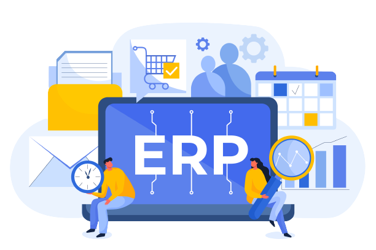
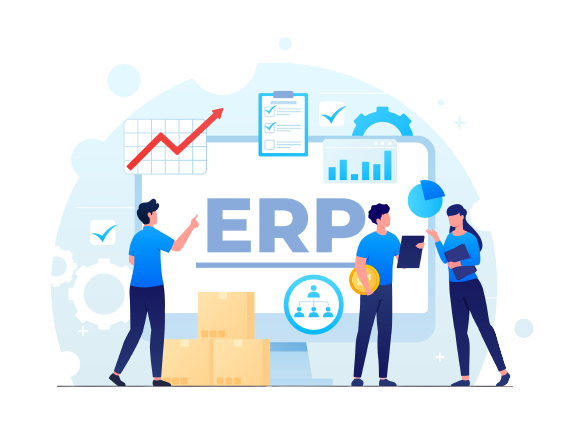

Afinal de contas o que é esse tal de ERP, e o que isto impacta nas
empresas e seu dia a dia.

História
O desenvolvimento do sistema ERP começou há mais de 100 anos. O
engenheiro Ford Whitman Harris criou um modelo EOQ (Economic Order
Quantity) para programar a produção. Ele foi utilizado por décadas até
que a fabricante de ferramentas Black & Decker adotou outra solução para
planejar as necessidades de materiais. O novo método ficou conhecido
como MRP (Material Requirements Planning).
Na prática,
alguns conceitos do EOQ foram utilizados e integrados a um computador.
Essa ferramenta foi usada por muitos anos até ser desenvolvida uma nova
metodologia em 1983, a MRP II (Manufacturing Resource Planning). Nessa
evolução, foram adotados módulos diferenciados e componentes da
arquitetura de software para integrar as atividades da companhia
relacionadas às compras e ao gerenciamento de contratos. A MRP II também
permitiu a integração de dados e o compartilhamento de informações entre
os diversos departamentos da companhia, a fim de melhorar a produção e
reduzir os desperdícios.
A tecnologia evoluiu nas décadas de 1970 e 1980, e a MRP II também. Seus
conceitos foram empregados em diferentes atividades empresariais. Tanto
que a nova ferramenta passou a incorporar os setores de finanças, RH e
vendas. Em 1990, esse sistema foi denominado ERP. É importante
compreender que as soluções tecnológicas estão em constante evolução
para oferecer cada vez mais funcionalidades e benefícios aos negócios.
Sendo assim, a ferramenta tende a passar por atualizações frequentes,
com o objetivo de acompanhar as mudanças do mercado.
Afinal o que é um ERP?

Abaixo estão os Líderes do Segmento no Mercado de ERP.
SAP
Uma das mais tradicionais, conhecidas e referência no mercado de
ERP!
Às vezes descrito como "o sistema nervoso central de uma empresa", um
sistema de software ERP oferece automação, integração e inteligência
essenciais para a execução eficiente de todas as operações comerciais
diárias. É necessário que a maioria dos dados de uma organização resida
no sistema ERP para fornecer uma única fonte da verdade a toda a
empresa.
O setor de finanças exige um ERP para rapidez no
fechamento dos livros. O departamento de vendas precisa do ERP para
gestão de todas as ordens do cliente. A área de logística depende de um
software ERP bem executado para fornecer aos clientes os produtos e
serviços certos dentro do prazo. O departamento de contas a pagar
precisa do ERP para pagar os fornecedores corretamente e dentro do
prazo. A gerência precisa de visibilidade instantânea do desempenho da
empresa para tomar decisões acertadas. E os bancos e acionistas exigem
registros financeiros precisos, por isso contam com dados e análises
confiáveis viabilizados pelo sistema ERP.
A importância do
software ERP para as empresas é ilustrada pela crescente taxa de adoção.
De acordo com o G2, “o mercado global de software ERP deverá atingir US$
78,40 bilhões até 2026, com uma taxa de crescimento anual composta
(CAGR) de 10,2% de 2019 a 2026”
Como funciona um sistema ERP?
Um sistema ERP – também chamado de suíte ERP – é composto por módulos
integrados ou aplicativos empresariais que se comunicam entre si e
compartilham um banco de dados comum. Normalmente, cada módulo ERP se
concentra em uma área empresarial, mas eles trabalham juntos usando os
mesmos dados para atender às necessidades da empresa. Finanças,
contabilidade, recursos humanos, vendas, procurement, logística e cadeia
de suprimentos são pontos de partida conhecidos. As empresas podem
escolher o módulo desejado, para depois acrescentar outros e fazer o
dimensionamento conforme a necessidade. Os sistemas ERP também suportam
requisitos específicos do setor, como parte da funcionalidade principal
do sistema ou por meio de extensões de aplicativo que se integram
perfeitamente ao pacote. O software ERP pode ser adquirido por meio do
modelo de assinatura em nuvem (software como serviço) ou do modelo de
licenciamento (on premise).
Seis principais benefícios do ERP
Um bom sistema ERP oferece muitas vantagens, que podem variar dependendo
de como o sistema é implementado. Os benefícios do ERP na nuvem, por
exemplo, são diferentes dos benefícios do ERP on premise. Dito isso, há
seis benefícios principais que se aplicam a todas as soluções ERP
modernas:
1 - Maior produtividade: otimize e automatize seus principais processos
de negócios para ajudar todos na sua organização a fazerem mais com
menos recursos.
2 - Insights de grande alcance: elimine silos de informações, crie uma
fonte única da verdade e tenha respostas rápidas para questões
essenciais dos negócios.
3 - Rapidez na emissão de relatórios: relatórios rápidos de finanças e
de negócios e resultados compartilhados com facilidade. Trabalhe com
base em insights e melhore o desempenho em tempo real.
4 - Riscos menores: maximize a visibilidade e o controle dos negócios,
assegure compliance com as exigências regulatórias e preveja e previna
riscos.
5 - TI mais simples: utilizando aplicativos integrados de ERP que
compartilham um mesmo banco de dados, você simplifica as operações de TI
e oferece a todos um modo mais fácil de trabalhar.
6 - Agilidade aumentada: com operações eficientes e acesso direto a
dados em tempo real, você identifica novas oportunidades e responde
rapidamente a elas.
Tipos de implementação de ERP
Sistemas modernos de ERP podem ser implementados de diversas formas: em
nuvem pública ou privada, on premise ou em diversos cenários híbridos
que combinam diferentes ambientes. Aqui estão alguns dos benefícios mais
vantajosos de cada um para ajudar você a identificar a opção de
implementação de ERP mais significativa para sua empresa.
ERP na nuvem => Com o ERP na nuvem, o software fica hospedado na nuvem e
é disponibilizado por meio da Internet como um serviço que você assina.
Em geral, o fornecedor do software cuida de manutenção, atualizações e
segurança regulares em seu nome. Atualmente, o ERP na nuvem é o método
de implementação mais popular por muitos motivos – incluindo custos
iniciais mais baixos, maior escalabilidade e agilidade, integração mais
fácil e muito mais.
ERP on premise => Este é o modelo tradicional de implementação de
software no qual você controla tudo. O software ERP é instalado no seu
data center nos locais que você escolher. A instalação e a manutenção do
hardware e do software são responsabilidade da sua equipe.
ERP híbrido => Para empresas que desejam um misto dos dois para atender
às exigências de seus negócios, há o modelo de ERP híbrido . Este é o
modelo em que alguns de seus aplicativos e dados ERP ficarão na nuvem e
outros on premise. Algumas vezes ele é denominado ERP de duas camadas.
O futuro do ERP
A transformação digital está acelerando – e o ERP está no centro. À
medida que as empresas adotam tecnologias digitais em todas as áreas de
negócios, elas mudam fundamentalmente seu modo de operação. De acordo
com o Gartner, um dos principais aceleradores de negócios digitais é o
"banimento de entraves" – em outras palavras, a eliminação de qualquer
força negativa que entrave o progresso da empresa, incluindo processos e
sistemas desatualizados. Portanto, não surpreende o fato de que as
empresas já estejam exigindo sistemas ERP mais robustos.
Eis aqui três grandes tendências que se baseiam no ímpeto que vemos
hoje:
1 => Nuvem, nuvem, nuvem: a preferência por ERP na nuvem continuará
aumentando à medida que um número cada vez maior de empresas descobrir
seus benefícios – incluindo acesso "em qualquer lugar", custo reduzido
de hardware e suporte técnico, maior segurança e integração com outros
sistemas, só para citar alguns. De acordo com a Panorama Research em seu
relatório de ERP de 2020, “Mais da metade das organizações está optando
por software na nuvem (63%) em vez de software on premise (37%)”. À
medida que a velocidade dos negócios aumenta, a nuvem se torna ainda
mais essencial.
2 => Integração vertical: o cabo de guerra entre as melhores soluções da
categoria e o ERP integrado terminou oficialmente. No futuro,
acreditamos que as empresas exigirão o melhor dos dois mundos – um
sistema ERP totalmente integrado com extensões verticais. Isso permite
que elas obtenham a funcionalidade específica de que necessitam, sem os
problemas de integração ou dados bloqueados em silos de informações.
Também percebemos a mudança para uma flexibilidade cada vez maior, já
que os processos empresariais são adaptados às necessidades individuais
de cada empresa.
3 => Personalização do usuário: equipe, clientes e fornecedores querem
conteúdo e funcionalidades que correspondam a suas necessidades ou a
seus interesses específicos e os tornem mais produtivos. As mudanças
demográficas da força de trabalho, particularmente em setores como
produção, também estão alavancando o interesse por plataformas low-code
e no-code. Essas plataformas permitem que os usuários tenham a
experiência que desejam, em vez de precisarem se adaptar ao software. Os
usuários também podem esperar pesquisa orientada por IA, além de
dashboards, chats e fluxos de trabalho personalizados em todos os
dispositivos.
Explore mais as tendências tecnológicas do ERP e saiba como avaliar
sistematicamente suas opções, evitar armadilhas e começar a usar as
inovações certas para sua empresa.
Integrantes da Equipe
Marcos DS.
Já tentou ser da Logística, Segurança do Trabalho, Farmácia
entre outros e nada fez brilhar os olhos como a Tecnologia da
Informação o fez, por isso escolheu entrar nesse novo mundo
através do Desenvolvimento de Sistemas. Apaixonado por Html,
Css, Java Script e seus Frameworks por isso se considera um
genuíno FrontEnd.
Gustavo
Bonito, rico e talentoso, esse é o Neymar... eu sou o Gustavo um
jovem senhor de 17 anos que anseia pela sua vez de ingressar no
mercado de trabalho, fazendo algo que gosta muito: Fazer
programa.👀
Eduward
Parece que tem uns 25 anos, porém tem só 19... atualmente
matriculado em diversos cursos sobre Tecnologia fazendo com que
vá criando muita bagagem quando se fala de Desenvolvimento de
Sistemas, curte muito um bom BackEnd.
Peterson W.
Peterson Wollinger nome de ator americano, porém é BR da gema de
São Vicente, 20 anos e que sonha ser um programador para
melhorar de vida, trabalhar home office para curtir os bons
momentos que a vida ainda tem a lhe propor.